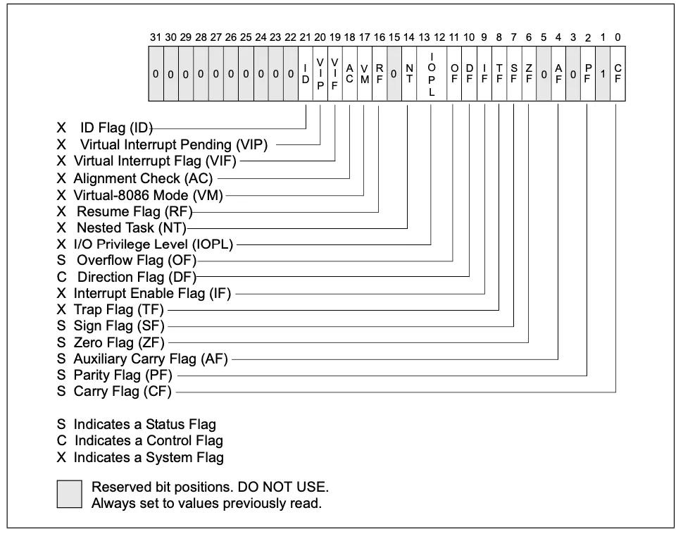

汇编简介
2024秋UCASCTF小组binary方向汇编部分讲义之一。在这节课，你将会了解到汇编语言的基本概念，有关寄存器与内存的相关知识，并动手实践，了解汇编语言与c语言的一些对应关系。
- 发布
- 阅读
- 10 分钟
- 语言
- ZH
- 分类
- binary
基本概念
指令：即控制cpu的指令，相当于一个或一串对cpu有意义的字节。不同设计的cpu会有不同的指令架构（这与硬件有关）。
机器码：cpu能直接执行的一个或一串字节。
汇编语言：是机器码的助记符。
寄存器：在cpu中的、可以快速访问的少量存储器。
不同的cpu有不同的指令集，对应的汇编语言也有不同的语法，使用的寄存器也不同。（比如intel的x86、x64架构，ARMv8架构，mips架构，在接下来的课程中，我们着重于x86、x64架构的汇编讲解）
同一架构下汇编语言的语法也可能有所不同，比如x64有AT&T语法、intel风格语法。此外，不同编译器之间也有一些较小的差异，比如masm和nasm。
下面给出上面四个概念的对应例子：
intel语法风格
push rbp ; 0x55
nop ; 0x90
上面的汇编语言片段中，push rbp 是一条汇编指令，它对应的机器码是 0x55 ，它的含义是将 rbp 寄存器中的值压入栈中。
AT&T语法风格
pushq %rbp
nop
基于方便的理由，我们这节课暂且以nasm编译器、intel风格语法为例编写汇编程序。
nasm编译器的安装和使用
-
ubuntu:
sudo apt install nasm -
windows:
下载后添加到系统PATH环境变量
检查 ： nasm --version
新建一个文件 hello.asm ，输入如下内容：
; Intel 格式
; Hello.asm
section .data ; 数据段声明
msg db "Hello World!",0xA ; 要输出的字符串
len equ $ -msg ; 字符串长度
section .text ; 代码段声明
global _start ; 指定入口函数
_start: ; 在屏幕上显示一个字符串
mov edx, len ; 参数三：字符串长度
mov ecx, msg ; 参数二：要显示的字符串
mov ebx, 1 ; 参数一：文件描述符（stdout）
mov eax, 4 ; 系统调用号（sys_write）
int 0x80 ; 调用内核功能
; 退出程序
mov ebx, 1 ; 参数一：退出代码
mov eax, 1 ; 系统调用号（sys_exit）
int 0x80 ; 调用内核功能
保存退出后，在终端输入
nasm -f elf64 helloworld.asm -o hello.o
ld hello.o -o hello即可生成可执行文件 hello ，执行它，将会打印一条helloworld
认识寄存器
在x86架构中，寄存器通常分为以下几类：
- 通用寄存器
- 标志寄存器
- 指令寄存器
- 段寄存器
- ...
（还有一些寄存器目前涉及不到，上面几个是现阶段逆向最常用的）
至于x64架构，只是将上面一些寄存器进行了拓展。
通用寄存器
x86系统通用寄存器有如下几个：
- eax 通常是和函数的返回值
- ebx 一般用来做数据存取
- ecx 通常用来作为计数器
- edx 乘除运算的默认操作数，也可以用作IO端口
- edi 通常与字符串操作有关
- esi 通常与字符串操作有关
- esp 栈顶寄存器
- ebp 栈基址寄存器
当然，上面所述都是其常用功能，即高级语言编译器的用法，这几个寄存器也可以做另外用途，自己写汇编的时候不一定遵守其通常行为。
上述这些寄存器储存大小都是32位，即4字节。若想访问其低16位，可以把前面的 e 去掉，比如 ax si 等等。
针对x64架构，这些寄存器全部由 r 打头，如 rax ，储存空间变为64位。另外，x64还新增了8个通用寄存器，即 r8-r15
| 64 | 低32 | 低16 | 低8 |
|---|---|---|---|
| rax | eax | ax | al |
| rbx | ebx | bx | bl |
| rcx | ecx | cx | cl |
| rdx | edx | dx | dl |
| rsi | esi | si | sil |
| rdi | edi | di | dil |
| rbp | ebp | bp | bpl |
| rsp | esp | sp | spl |
| r8 | r8d | r8w | r8b |
| r9 | r9d | r9w | r9b |
| r10 | r10d | r10w | r10b |
| r11 | r11d | r11w | r11b |
| r12 | r12d | r12w | r12b |
| r13 | r13d | r13w | r13b |
| r14 | r14d | r14w | r14b |
| r15 | r15d | r15w | r15b |
ax-dx 可访问其高八位为 ah-dh
标志位寄存器
这个寄存器中有很多标志位，用于储存cpu执行指令的一些状态。

指令寄存器
x86下指令寄存器叫 eip ，x64下叫 rip ，他们存放着cpu下一条指令所存放的地址，
pwn中劫持程序控制流本质上就是修改指令寄存器到期望的地址而完成的。
段寄存器
x86和x64架构都有如下几个段寄存器，它们都是16位的
- cs 代码段
- ds 数据段
- ss 栈段
- es 拓展段
- fs 数据段
- gs 数据段
段寄存器的知识略显复杂，尤其在x86和x64的保护模式下，暂且不论。有兴趣的同学可以参考 一口气看完45个寄存器，CPU核心技术大揭秘
认识一些常见的指令
mov
我们先来根据上面 helloworld.asm 程序来讲解
_start:
mov edx, len
mov ecx, msg
mov ebx, 1
mov eax, 4
int 0x80
mov ebx, 1
mov eax, 1
int 0x80
首先是 mov 指令，格式为 mov a,b ，用c语言类比则是 a=b; 。在intel风格的语法中（也就是现在我们展示的语法），a 叫做目的操作数 ，b 叫做源操作数。目的操作数和源操作数有一定的规则，以下语法允许的：
源操作数 b |
目的操作数 a |
|---|---|
| 立即数 | 寄存器 |
| 立即数 | 内存 |
| 寄存器 | 寄存器 |
| 寄存器 | 内存 |
| 内存 | 寄存器 |
注：在intel风格语法中，目的操作数在前，源操作数在后；在AT&T语法中，目的操作数在后，源操作数在前。
立即数：cpu将指令的一部分解释成数据，这部分数据称为立即数。比如说 mov ebx, 1 中的 1 即为立即数。如果你查看 mov ebx, 1 的机器码（bb 01 00 00 00），你会发现这部分数据确实是存在于指令中的。
在这里，你可能会对上面的机器码有所疑问，在这里先做解答：
- 为什么1是四字节？因为ebx是四字节的寄存器。
- 为什么1是倒序的？因为遵循小端序储存。小端序是指一个整数储存在内存中时，其低位（偏小的位）对应低地址，高位对应高地址。上面指令中
bb端是低地址方向，所以1储存在低地址方向。 - 为什么是
01而不是10？因为显示的时候以一个字节为单位进行显示，事实上其二进制应为1000 0000
那么内存是怎么体现的？
在nasm语法中，[...] 用以表示取 ... 的值作为地址，该地址中的值，...是一个有效表达式。比如 mov eax,[ebx] 约等于c语言中的 eax=*ebx ，相当于 ebx 是一个指针。下面举出一些例子供大家体会：
mov eax,[ebx*2+ecx+2]
mov eax,[ebx*5]
;下面使用了标签
mov ebx,[label1+label2*2]
标签：在nasm语法中，你可以在数据声明或指令前面写一个标签，你在编程中可以引用这个标签，这等价于引用此处指令或声明的地址。
例如 helloworld.asm 中，msg 和 _start 都是标签。标签可以加冒号，也可以不加冒号。标签会在数据引用和跳转上带来极大的便利。
常量
equ 定义一个符号，代表一个常量值：当使用 equ 时，源文件行上必须包含一个label。 equ 的行为就是把给出的label的名字定义成它的操作数(唯一)的值。该定义是不可更改的。
上述 helloworld.asm 中的 len 就是一个例子。它相当于在编译期间将所有 len 都换成一个立即数。
int 0x80
经过上面的学习，你应该已经了解了 _start 标签下面4行汇编指令的意思，接着的指令是 int 0x80。它向系统发出 0x80 的软中断指令，使系统进入内核态 ，并根据一些通用寄存器中的值进行系统调用。你可以理解为调用操作系统（linux）的函数。
进行系统调用时，eax 储存的是系统调用号，并分别由 ebx 、ecx 、edx 、esi 、edi 传递第1-5个参数。系统调用号决定了调用系统哪个函数。
在本例中，前面一段的系统调用号是 4 ，写成c语言是 write(stdout,msg,len); ，而下面一段则是 exit(0); 。
针对 helloworld.asm 的其他东西
section
section 是一个伪指令，用于表示声明一个段，如数据段、代码段、bss段等，这与程序运行时内存分布相对应。
global
global 也是一个伪代码，表示导出符号到其他模块。
数据声明
在声明以初始化的数据的时候，db dw dd dq 分别代表以1、2、4、8个字节为单位，前面需要加上一个标签，相当于指针。
相对的，声明未初始化数据的时候（声明在bss段） ，使用 resb resw resd resq，后面加上以前面声明类型为单位的数据量，比如 label1 resb 64 （声明一个64字节的未初始化变量）。
$与$$
$表示从它所在源代码行在编译后的起始地址，$$表示从当前段的起始地址。
所以 $-msg 表达的是当前源码地址减去 msg 起始地址，即得到 msg 字符串长度
lea
lea 指令用于加载有效地址，用法如下：
lea eax,[401080h]将一个地址401080h写入eaxlea eax,dword [ebx]将储存了地址的ebx中的值写入eaxlea eax, [ebx+ecx*4+8]计算ebx+ecx*4+8的地址并写入eax
在x64架构中也同理。
算数指令、逻辑指令
我们只先提及下面会用到的，其他指令建议自学了解。
add a,b相当于a=a+b，其中a可以是一个寄存器或内存地址，b可以是一个立即数、寄存器或内存地址。sub a,b相减，与上面同理。
栈与函数
这里的栈指的是程序运行时的栈，它由栈基址寄存器 ebp 和栈顶寄存器 esp 来管理。
00:0000│ rsp 0x7fffffffd640 ◂— 0x55460000000000
01:0008│ 0x7fffffffd648 ◂— 0x85ddfd55f4464e00
02:0010│ rbp 0x7fffffffd650 ◂— 0x1
03:0018│ 0x7fffffffd658 —▸ 0x7ffff7dd9d68 (__libc_start_call_main+120) ◂— mov edi, eax
04:0020│ 0x7fffffffd660 —▸ 0x7fffffffd750 —▸ 0x7fffffffd758 ◂— 0x38 /* '8' */
05:0028│ 0x7fffffffd668 —▸ 0x5555555551e6 (main) ◂— endbr64
06:0030│ 0x7fffffffd670 ◂— 0x155554040这是一个64位程序main函数的栈（使用插件pwndbg）
push可以接一个立即数或一个寄存器操作数，将一个值压入栈中。 例：push eax等效于sub esp,4; mov [esp],eaxpop接一个寄存器，将栈中的值弹入寄存器中。 例：pop eax等效于mov eax,[esp]; add esp,4leave不接任何东西，在一个函数结束的时候调用。 例：leave等效于mov esp,ebp; pop ebpcall调用一个函数，后面接一个地址（或者说是标签）。 例：call printf等效于push eip; jmp printfret从一个函数中返回到原来的执行位置，什么也不接。 例：ret等效于pop eip
可以通过上节课的 overflow32 程序逆向了解栈帧。
另，下面是一段经典的x86的shellcode
section .text
global _start
_start:
xor eax,eax
push eax
push 0x68732f2f
push 0x6e69622f
mov ebx,esp
mov ecx,eax
mov edx,eax
mov al,0xb
int 0x80
xor eax,eax
inc eax
int 0x80
编译链接：
nasm -f elf32 shellcode.asm -o shellcode.o
ld shellcode.o -o shellcode -m elf_i386